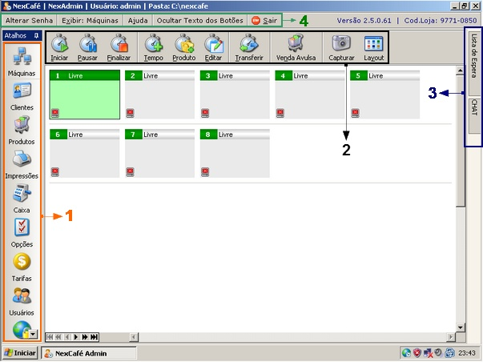

|
Conheça agora os conceitos básicos da interface do NexCafé.
A-Veja abaixo os elementos mais importantes da tela principal do NexAdmin
Quando você faz o login no NexAdmin essa é a tela que você encontra.

| 1. | Barra de Atalhos: usando essa barra você escolhe o módulo que deseja acessar. No exemplo acima, o primeiro item está selecionado: o módulo de máquinas. Por exemplo, se quisesse cadastrar um cliente, você teria clicar em "Clientes" que é o segundo módulo dentro dos atalhos. Nessa fase de aprendizado entre em módulo por módulo para se familiarizar com as funções de cada um deles. |
| 2. | Barra de Botões: nesse item aparecem os botões que comandam as operações do módulo selecionado. No exemplo acima os botões servem para iniciar um acesso na máquina, pausar o acesso, finalizar, adicionar tempo, adicionar produto e outras funções. Entre em cada módulo para se familiarizar com os botões de cada um. Nessa fase de testes aperte cada um dos botões sem receio para conhecer as funções. |
| 3. | Lista de espera e CHAT: esses dois recursos ficam na lateral direita do NexAdmin. Quando eles estão minimizados como na figura acima, basta mover o mouse em cima deles para que se abram. Você pode também manter a tela deles aberta o tempo todo clicando em uma taxinha que aparece no canto da janela. O chat e a lista de espera ficam sempre visíveis mesmo que você saia do módulo de máquinas. Isso é util, pois você poderia estar em caixa e mesmo assim usar o CHAT. |
| 4. | Menu principal: aqui você tem algumas funções básicas do sistema: alteração de senha, exibir (para mudar de módulo também), ajuda, ocultar texto dos botões e o botão de sair. Clique em um por um para conhece-los. |
|